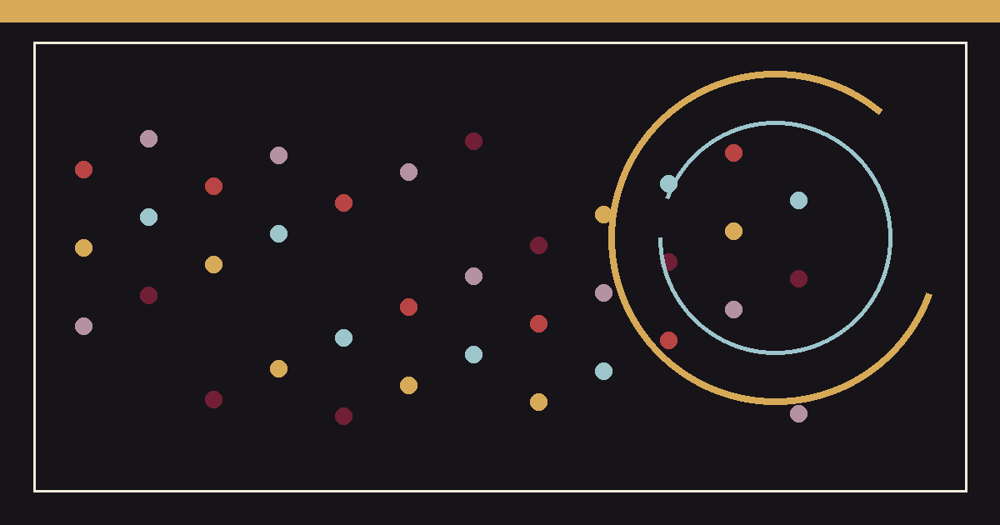

__EXPERIMENT_GROUP_A__
__EXPERIMENT_POINT_1__
FOLIO 10 / 对照双席
__EXPERIMENT_DECK__

__EXPERIMENT_POINT_1__
__EXPERIMENT_POINT_2__
__EXPERIMENT_SECTION_1_BODY__
__EXPERIMENT_SECTION_2_BODY__
__EXPERIMENT_SECTION_3_BODY__
__EXPERIMENT_SECTION_4_BODY__
__EXPERIMENT_SECTION_5_BODY__
__EXPERIMENT_FAQ_ANSWER_1__
__EXPERIMENT_FAQ_ANSWER_2__